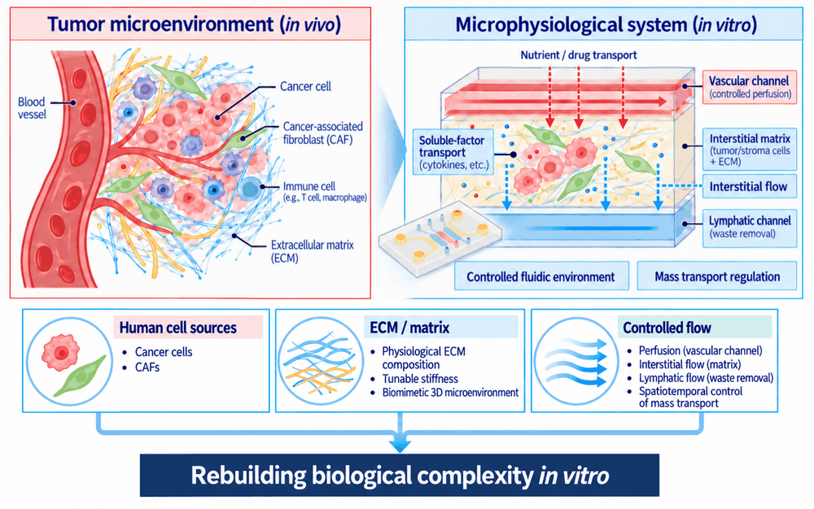

소자를 설계하고, 그 안에서 조직을 배양하며, 센서로 계측하고, 그 측정값을 표준화합니다. 한편에는 생리학적으로 충실한 in vitro 모델이, 다른 한편에는 그 데이터를 비교 가능하게 만드는 AI 기반 방법론이 있습니다.
주제를 선택하면 자세한 내용을 볼 수 있습니다.

학부 인턴, 석사 및 박사 과정 지원자를 환영합니다. 연구에 관심이 있다면 언제든 연락 주시기 바랍니다.